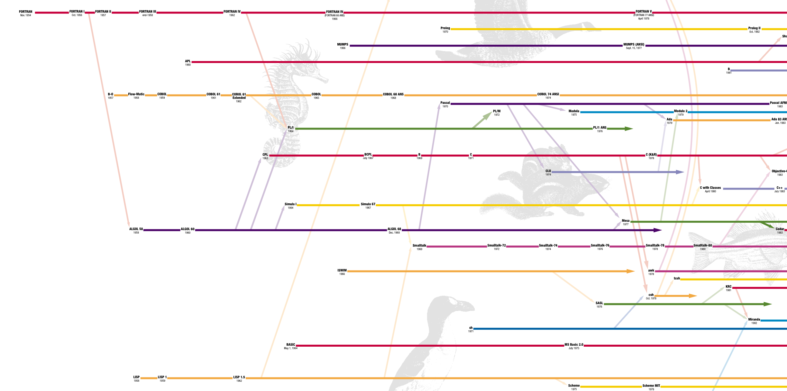

There were four main high-level languages at the time. Click on their names to learn more about them.
by John Backus.
by John McCarthy.
by Peter Naur.

Timeline of programming languages. The text is too small, but you can find the original file here.